[C/E - Simulado Clipping › 07/2023 › Elasticidade-preço da demanda]Julgue o item a seguir, relativo à elasticidade-preço da demanda. Item: A elasticidade-preço da demanda é uma medida da sensibilidade da quantidade ofertada de um bem ou serviço em relação às mudanças em seu preço, e é influenciada pela disponibilidade de substitutos. | ❌ ERRADO A elasticidade-preço da demanda é uma medida da sensibilidade da quantidade ofertada de um bem ou serviço em relação às mudanças em seu preço, e é influenciada pela disponibilidade de substitutos. 🎯 Em poucas palavras: A elasticidade-preço da demanda mede a sensibilidade da quantidade demandada ao preço. A segunda parte (substitutos) está certa. 📖 Destrinchando o tema:
🧐 Dissecando a redação do item: [meia-verdade · troca de conceito] Uma palavra trocada (“ofertada” por “demandada”) no meio de uma frase que, de resto, é definição de manual — e a segunda oração verdadeira dá ar de correção ao conjunto. Leitura palavra a palavra resolve. 😈 Para dificultar:
✍️ Reescrita correta: A elasticidade-preço da demanda é uma medida da sensibilidade da quantidade demandada de um bem ou serviço em relação às mudanças em seu preço, e é influenciada pela disponibilidade de substitutos. |
[C/E - Banca não identificada › Elasticidade-preço da demanda]Julgue o item a seguir, relativo à elasticidade-preço da demanda e à classificação dos bens. Item: Se o aumento do preço de um bem deixar o consumo inalterado, esse bem deverá ser um bem normal. | ❌ ERRADO Se o aumento do preço de um bem deixar o consumo inalterado, esse bem deverá ser um bem normal. 🎯 Em poucas palavras: Consumo que não reage ao preço revela elasticidade-preço nula (demanda perfeitamente inelástica). “Bem normal” é classificação pela renda: nada se conclui sobre ela a partir de uma reação ao preço. 📖 Destrinchando o tema:
🧐 Dissecando a redação do item: [nexo indevido · troca de conceito] O item cria uma ligação lógica entre dois eixos independentes (preço e renda) e a reforça com o modal “deverá”. Pista: a premissa só fala de preço; a conclusão, de renda. 😈 Para dificultar:
✍️ Reescrita correta: Se o aumento do preço de um bem deixar o consumo inalterado, a demanda por esse bem terá elasticidade-preço nula (perfeitamente inelástica), sem que isso permita classificá-lo como normal ou inferior. |
[C/E - Banca não identificada › Elasticidade-preço da demanda]Julgue o item a seguir, relativo à elasticidade-preço da demanda. Item: A elasticidade será perfeita quando for igual a zero. | ❌ ERRADO A elasticidade será perfeita quando for igual a zero. 🎯 Em poucas palavras: Demanda “perfeitamente elástica” é a de elasticidade infinita (curva horizontal). Elasticidade zero é o extremo oposto: demanda perfeitamente inelástica (curva vertical). 📖 Destrinchando o tema:
🧐 Dissecando a redação do item: [inversão] O item troca os extremos da escala. Redação curta e vaga (“a elasticidade será perfeita”), típica de questionário; a resposta sai da tabela dos cinco casos. Item-irmão, com redação mais precisa: ECO-E1-0107-1. 🧠 Mnemônico:
😈 Para dificultar:
✍️ Reescrita correta: A elasticidade será perfeita quando for infinita. |
[C/E - Banca não identificada › Elasticidade-preço da demanda]Julgue o item a seguir, relativo à elasticidade-preço da demanda. Item: As alterações no ponto da curva de demanda não alteram a elasticidade-preço. | ❌ ERRADO As alterações no ponto da curva de demanda não alteram a elasticidade-preço. 🎯 Em poucas palavras: Em regra, a elasticidade-preço muda ao longo da curva: na demanda linear, vai de muito elástica (preço alto) a muito inelástica (preço baixo). Constância é exceção (curvas isoelásticas, vertical, horizontal). 📖 Destrinchando o tema:
📈 No gráfico: 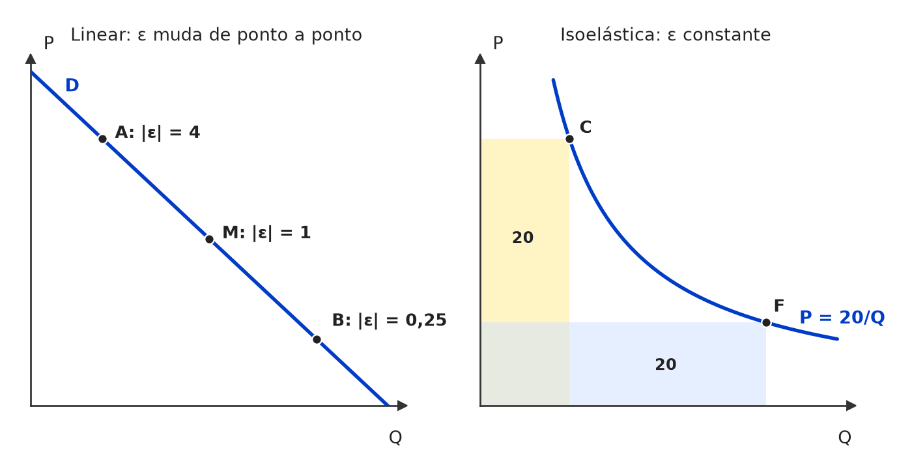 À esquerda, a demanda linear: inclinação constante, mas |ε| cai à medida que se desce pela curva (4 em A, 1 em M, 0,25 em B). À direita, a exceção: na curva isoelástica P = 20/Q, os retângulos de gasto são iguais e ε = −1 em todos os pontos. 🧐 Dissecando a redação do item: [modulador absoluto] O item transforma uma exceção (curvas isoelásticas) em regra geral. A armadilha está em confundir inclinação com elasticidade: quem pensa “a reta tem a mesma inclinação em tudo” marca CERTO. 😈 Para dificultar:
✍️ Reescrita correta: As alterações no ponto da curva de demanda em regra alteram a elasticidade-preço (exceto em curvas isoelásticas). |
[C/E - Banca não identificada › Elasticidade-preço da demanda]Julgue o item a seguir, relativo à elasticidade-preço da demanda. Item: Considerando uma curva de demanda na forma Q = a – bP, é correto afirmar que a elasticidade preço não é a mesma para todos os pontos. | ✅ CERTO Considerando uma curva de demanda na forma Q = a – bP, é correto afirmar que a elasticidade preço não é a mesma para todos os pontos. 🎯 Em poucas palavras: Na demanda linear, ε = −bP/Q: a inclinação é constante, mas a razão P/Q muda a cada ponto. A elasticidade vai de ∞ (Q = 0) a 0 (P = 0). 📖 Destrinchando o tema:
📈 No gráfico: 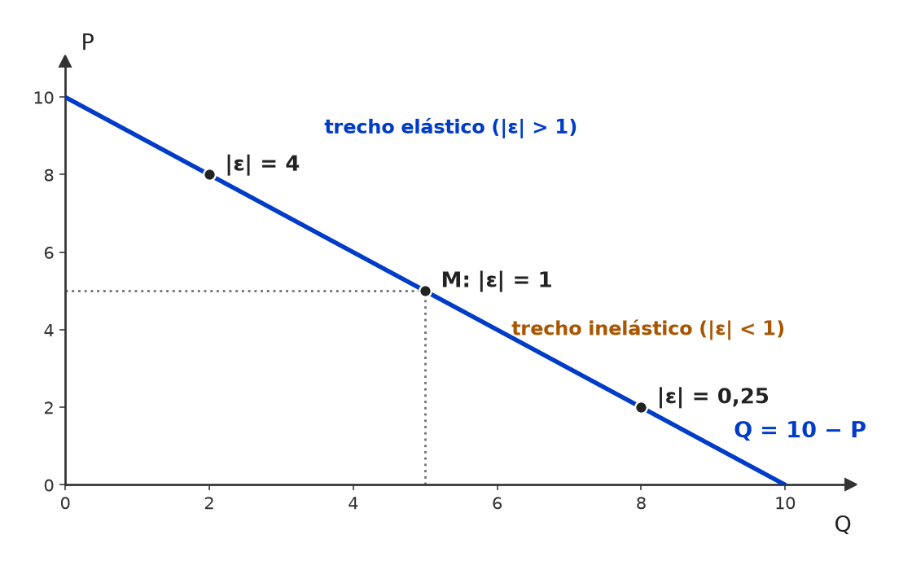 Na reta Q = 10 − P, a inclinação é a mesma em todos os pontos, mas |ε| = P/Q muda: elástica acima do ponto médio M, unitária em M (P = 5, Q = 5) e inelástica abaixo dele. 🧐 Dissecando a redação do item: [contraintuitivo] O item aposta na confusão entre inclinação e elasticidade: a reta “parece igual em todos os pontos”. Itens desse bloco cobram também o ponto de elasticidade unitária no meio da reta e a receita máxima ali. 😈 Para dificultar:
|
[C/E - Banca não identificada › Elasticidade-preço da demanda]Julgue o item a seguir, relativo à elasticidade-preço da demanda. Item: A demanda de um produto será perfeitamente elástica se sua elasticidade-preço for igual a zero. | ❌ ERRADO A demanda de um produto será perfeitamente elástica se sua elasticidade-preço for igual a zero. 🎯 Em poucas palavras: Elasticidade zero = demanda perfeitamente inelástica (vertical). Perfeitamente elástica é a de elasticidade infinita (horizontal). 📖 Destrinchando o tema:
📈 No gráfico: 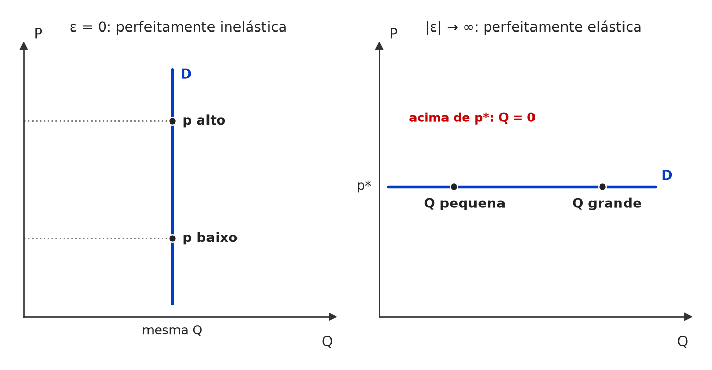 Os dois extremos da elasticidade-preço: com ε = 0 (perfeitamente inelástica), a quantidade não reage ao preço — curva vertical; com |ε| infinita (perfeitamente elástica), o preço é um só e a quantidade pode ser qualquer — curva horizontal. 🧐 Dissecando a redação do item: [inversão] Troca os extremos: atribui ao zero o rótulo do infinito. Item-irmão, de redação mais vaga: ECO-E1-0100-1. 😈 Para dificultar:
✍️ Reescrita correta: A demanda de um produto será perfeitamente elástica se sua elasticidade-preço for infinita. |
[C/E - Banca não identificada › Elasticidade-preço da demanda]Julgue o item a seguir, relativo à curva de demanda linear. Item: Na fórmula da demanda Q = a – bP, o coeficiente angular é o b. | ✅ CERTO Na fórmula da demanda Q = a – bP, o coeficiente angular é o b. 🎯 Em poucas palavras: Na demanda linear Q = a − bP, a é o intercepto (coeficiente linear) e b é o parâmetro de inclinação (coeficiente angular), que entra com sinal negativo pela lei da demanda. 📖 Destrinchando o tema:
🧐 Dissecando a redação do item: [literalidade · detalhe] Item de definição: reproduz a leitura escolar da equação. O risco está em dois deslizes vizinhos que a banca costuma explorar: confundir o coeficiente angular com a elasticidade e esquecer que, com P no eixo vertical, a inclinação do desenho é −1/b. 😈 Para dificultar:
|
[C/E - Banca não identificada › Elasticidade-preço da demanda]Julgue o item a seguir, relativo aos casos extremos de elasticidade-preço da demanda. Item: Para uma curva de demanda completamente horizontal, os consumidores irão adquirir toda a quantidade disponível a um preço específico. | ✅ CERTO Para uma curva de demanda completamente horizontal, os consumidores irão adquirir toda a quantidade disponível a um preço específico. 🎯 Em poucas palavras: Demanda horizontal = perfeitamente elástica (|ε| = ∞): ao preço p* os compradores absorvem qualquer quantidade; acima dele, não compram nada. 📖 Destrinchando o tema:
📈 No gráfico: 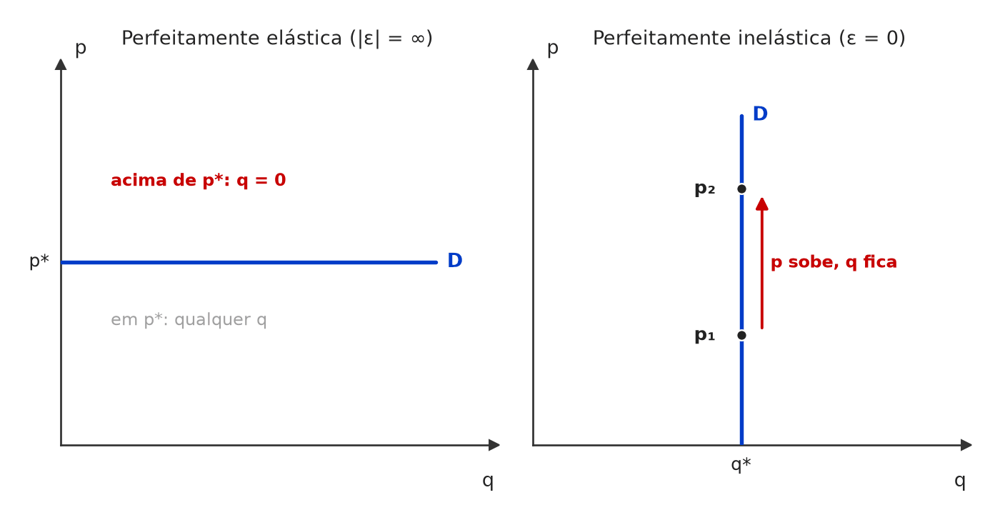 À esquerda, demanda horizontal (perfeitamente elástica): ao preço p* compra-se qualquer quantidade; um centavo acima, nada. À direita, demanda vertical (perfeitamente inelástica): a quantidade q* não muda, seja qual for o preço. 🧐 Dissecando a redação do item: [paráfrase fiel] O item descreve com outras palavras a demanda perfeitamente elástica. A armadilha é inverter mentalmente os extremos: quem associa “horizontal” a “o preço não importa” tende a marcar ERRADO. 🔥 Par clássico de itens: horizontal × vertical. 😈 Para dificultar:
|
[C/E - Banca não identificada › Elasticidade-preço da demanda]Julgue o item a seguir, relativo aos casos extremos de elasticidade-preço da demanda. Item: Em uma curva de demanda estritamente vertical, o interesse dos consumidores por um produto permanece constante, independentemente das variações no preço. A demanda é perfeitamente inelástica. | ✅ CERTO Em uma curva de demanda estritamente vertical, o interesse dos consumidores por um produto permanece constante, independentemente das variações no preço. A demanda é perfeitamente inelástica. 🎯 Em poucas palavras: Curva vertical: a quantidade demandada é a mesma a qualquer preço, logo %ΔQ = 0 e ε = 0 — demanda perfeitamente inelástica. 📖 Destrinchando o tema:
🧐 Dissecando a redação do item: [paráfrase fiel] O item usa “interesse dos consumidores” no lugar de “quantidade demandada”, mas a segunda frase fecha o sentido sem ambiguidade. Pista: “independentemente das variações no preço” é a definição de ε = 0. 😈 Para dificultar:
|
[C/E - Banca não identificada › Elasticidade-preço da demanda]Julgue o item a seguir, relativo à elasticidade-preço da demanda. Item: Quando a curva de demanda é uma reta, ou seja, linear, há várias elasticidades ao longo dela. | ✅ CERTO Quando a curva de demanda é uma reta, ou seja, linear, há várias elasticidades ao longo dela. 🎯 Em poucas palavras: Na reta a inclinação é constante, mas ε = (ΔQ/ΔP)·(P/Q) depende de P/Q, que muda a cada ponto: |ε| vai de ∞ a 0, passando por 1 no ponto médio. 📖 Destrinchando o tema:
📈 No gráfico: 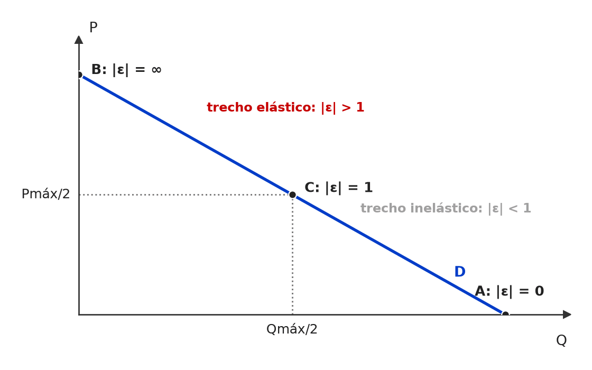 Na demanda linear a inclinação é constante, mas a elasticidade não: |ε| = (ΔQ/ΔP)·(P/Q) vai de infinito no intercepto do preço (B) a 1 no ponto médio (C) e a zero no intercepto da quantidade (A). 🧐 Dissecando a redação do item: [contraintuitivo] Contraria a intuição de que “reta = comportamento constante”. O item cobra a distinção entre inclinação e elasticidade. 🔥 Variação frequente: “a demanda linear tem elasticidade constante” → ERRADO. 😈 Para dificultar:
|
[C/E - CEBRASPE › MPE/TO/Analista Ministerial/2006 › Elasticidade, receita e gasto]Julgue o item a seguir, relativo à elasticidade-preço da demanda. Item: Se a elasticidade da demanda de serviços jurídicos for unitária, então, um aumento de preços elevará a receita total com esses serviços. | ❌ ERRADO Se a elasticidade da demanda de serviços jurídicos for unitária, então, um aumento de preços elevará a receita total com esses serviços. 🎯 Em poucas palavras: Com |ε| = 1, a queda percentual da quantidade iguala a alta percentual do preço: a receita total fica constante. 📖 Destrinchando o tema:
📈 No gráfico: 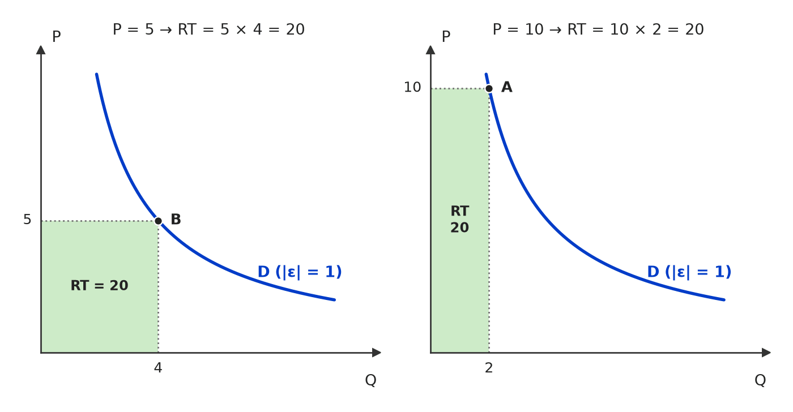 Com demanda de elasticidade unitária (P·Q constante, uma hipérbole), dobrar o preço de 5 para 10 reduz a quantidade à metade, de 4 para 2: os dois retângulos de receita têm a mesma área (20). 🧐 Dissecando a redação do item: [troca de conceito] Atribui à demanda unitária o comportamento da inelástica. 🔥 O CEBRASPE cobra a tabela de três casas do teste da receita com contextos variados (serviços jurídicos, transporte, medicamentos): basta localizar o caso. 😈 Para dificultar:
✍️ Reescrita correta: Se a elasticidade da demanda de serviços jurídicos for unitária, então, um aumento de preços manterá inalterada a receita total com esses serviços. |
[C/E - Armstrong › Pré-TPS/2026 › Elasticidade, receita e gasto]Acerca dos determinantes e das aplicações da elasticidade, julgue o item a seguir. Item: A máxima “demanda elástica significa que uma queda de preço aumenta receita” é universal, inclusive para grandes variações, dispensando qualquer cuidado de mensuração. | ❌ ERRADO A máxima “demanda elástica significa que uma queda de preço aumenta receita” é universal, inclusive para grandes variações, dispensando qualquer cuidado de mensuração. 🎯 Em poucas palavras: A regra vale localmente, no trecho em que a demanda é elástica. Em variações grandes a elasticidade muda ao longo da curva e precisa ser medida com a elasticidade-arco (método do ponto médio). 📖 Destrinchando o tema:
🧐 Dissecando a redação do item: [modulador absoluto] A regra é verdadeira; o erro está em blindá-la com “universal”, “inclusive para grandes variações” e “dispensando qualquer cuidado”. 🔥 Moduladores empilhados quase sempre sinalizam ERRADO. 😈 Para dificultar:
✍️ Reescrita correta: A máxima “demanda elástica significa que uma queda de preço aumenta receita” vale localmente; para grandes variações, exige cuidado de mensuração, como o uso da elasticidade-arco (método do ponto médio). |
[C/E - Nabuco › Elasticidade, receita e gasto]A respeito dos conceitos e aplicações da elasticidade, julgue os itens a seguir. Item: Se a demanda por um serviço é elástica, uma redução no seu preço resultará em uma queda na receita total auferida pelos prestadores desse serviço, pois a variação percentual na quantidade demandada será maior que a variação percentual no preço. | ❌ ERRADO Se a demanda por um serviço é elástica, uma redução no seu preço resultará em uma queda na receita total auferida pelos prestadores desse serviço, pois a variação percentual na quantidade demandada será maior que a variação percentual no preço. 🎯 Em poucas palavras: Com demanda elástica, preço e receita andam em sentidos opostos: baixar o preço aumenta a receita. A justificativa do item está certa e leva à conclusão contrária. 📖 Destrinchando o tema:
🧐 Dissecando a redação do item: [contradição · inversão] O item traz a premissa correta (variação da quantidade maior que a do preço) e tira dela a conclusão oposta. Pista: se Q sobe proporcionalmente mais do que P cai, o produto P × Q tem de subir. 😈 Para dificultar:
✍️ Reescrita correta: Se a demanda por um serviço é elástica, uma redução no seu preço resultará em um aumento na receita total auferida pelos prestadores desse serviço, pois a variação percentual na quantidade demandada será maior que a variação percentual no preço. |
[C/E - Nabuco › Elasticidade, receita e gasto]A respeito da teoria do consumidor e dos conceitos de elasticidade, julgue os seguintes itens. Item: Se a demanda por um produto é inelástica em relação ao preço, um aumento no preço do produto levará a uma redução na receita total dos vendedores. | ❌ ERRADO Se a demanda por um produto é inelástica em relação ao preço, um aumento no preço do produto levará a uma redução na receita total dos vendedores. 🎯 Em poucas palavras: Demanda inelástica (|ε| < 1): a quantidade cai proporcionalmente menos que o preço sobe, e a receita total aumenta. 📖 Destrinchando o tema:
🧐 Dissecando a redação do item: [inversão] Atribui à demanda inelástica o efeito da elástica. Pista: “inelástica” = consumidor reage pouco = o vendedor ganha ao subir o preço. 😈 Para dificultar:
✍️ Reescrita correta: Se a demanda por um produto é inelástica em relação ao preço, um aumento no preço do produto levará a um aumento na receita total dos vendedores. |
❌ [C/E - Nidi/Jacqueline Bueno › Fevereiro/2025 › Elasticidade, receita e gasto]Segundo a teoria microeconômica e os seus axiomas da racionalidade, julgue o item a seguir, relativo ao comportamento do consumidor. Item: Ao se deparar com a redução de preço do quilo de arroz, o consumidor percebe que realiza uma economia de gastos em relação à quantidade que usualmente comprava ao preço inicial. Se esse consumidor decide usar parte dessa economia para comprar mais unidades desse bem, mas também aproveita outra parte dela para comprar outros bens para sua cesta básica de alimentação, então, para esse consumidor, a demanda por arroz é preço-elástica. | ❌ ERRADO Ao se deparar com a redução de preço do quilo de arroz, […] Se esse consumidor decide usar parte dessa economia para comprar mais unidades desse bem, mas também aproveita outra parte dela para comprar outros bens […], então, para esse consumidor, a demanda por arroz é preço-elástica. 🎯 Em poucas palavras: Se só parte da economia volta para o arroz, o gasto com arroz cai quando o preço cai. Gasto e preço no mesmo sentido = demanda inelástica. 📖 Destrinchando o tema:
🧐 Dissecando a redação do item: [troca de conceito] O item narra uma situação que caracteriza demanda inelástica e conclui “elástica”. A narrativa longa (economia, cesta básica) disfarça um teste simples de gasto. Pista: “parte dessa economia” — é o que garante que o gasto com arroz caiu. 😈 Para dificultar:
✍️ Reescrita correta: Ao se deparar com a redução de preço do quilo de arroz, […] então, para esse consumidor, a demanda por arroz é preço-inelástica. |
[C/E - Daniel – Economia CACD (Telegram) › Elasticidade, receita e gasto]Julgue o item a seguir, relativo à elasticidade-preço da demanda e à receita total. Item: Quando a demanda por um bem é inelástica, um aumento de preço leva a uma diminuição proporcionalmente menor da quantidade demandada. Diante disso, a Receita Total do ofertante aumenta. | ✅ CERTO Quando a demanda por um bem é inelástica, um aumento de preço leva a uma diminuição proporcionalmente menor da quantidade demandada. Diante disso, a Receita Total do ofertante aumenta. 🎯 Em poucas palavras: Inelástica = |ε| < 1: a quantidade cai menos, em %, do que o preço sobe. Como RT = P × Q, o efeito do preço vence e a receita total sobe. 📖 Destrinchando o tema:
🧐 Dissecando a redação do item: [literalidade] Definição seguida da consequência correta. O risco é a leitura intuitiva “quantidade caiu → receita caiu”; a palavra decisiva é “proporcionalmente”. 😈 Para dificultar:
|
[C/E - Nabuco › Elasticidade, receita e gasto]Com relação às intervenções governamentais no equilíbrio de mercado e ao conceito de elasticidade, julgue (C ou E) os itens seguintes. Item: Considerando uma curva de demanda negativamente inclinada de determinado produtor, caso a elasticidade da demanda seja maior que 1, em valor absoluto, a receita de vendas do produtor aumenta quando o preço sobe. | ❌ ERRADO Considerando uma curva de demanda negativamente inclinada de determinado produtor, caso a elasticidade da demanda seja maior que 1, em valor absoluto, a receita de vendas do produtor aumenta quando o preço sobe. 🎯 Em poucas palavras: Com demanda elástica (|ε| > 1), a quantidade cai proporcionalmente mais do que o preço sobe: a receita p × q diminui. Receita sobe com o preço só na demanda inelástica. 📖 Destrinchando o tema:
📈 No gráfico: 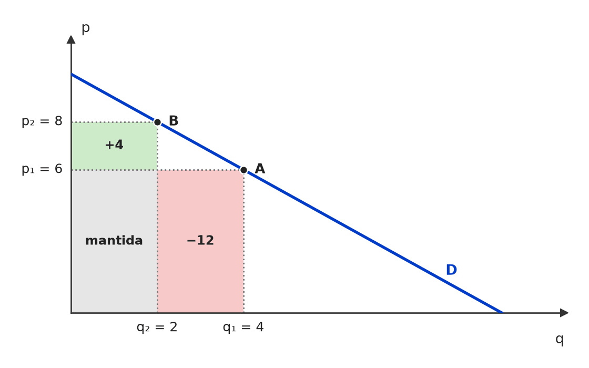 Na parte elástica da demanda p = 10 − q, subir o preço de 6 para 8 ganha 4 nas unidades que continuam vendidas (área verde), mas perde 12 nas que deixam de ser vendidas (área vermelha): a receita cai de 24 para 16. 🧐 Dissecando a redação do item: [inversão] O item aplica à demanda elástica o resultado da inelástica. Tudo o mais (inclinação negativa, |ε| > 1, preço subindo) está correto, o que dá ar de verdade. Teste rápido: elástica = consumidor “foge” do aumento → vende-se muito menos → receita cai. 😈 Para dificultar:
✍️ Reescrita correta: Considerando uma curva de demanda negativamente inclinada de determinado produtor, caso a elasticidade da demanda seja maior que 1, em valor absoluto, a receita de vendas do produtor diminui quando o preço sobe. |
[C/E - Banca não identificada › Elasticidade, receita e gasto]Julgue o item a seguir, relativo à elasticidade-preço da demanda e à receita. Item: Quando o módulo da elasticidade preço da demanda de um produto for inferior a um, um aumento no seu preço tenderá a reduzir a receita do monopolista. | ❌ ERRADO Quando o módulo da elasticidade preço da demanda de um produto for inferior a um, um aumento no seu preço tenderá a reduzir a receita do monopolista. 🎯 Em poucas palavras: Com |ε| < 1 (demanda inelástica), a quantidade cai proporcionalmente menos do que o preço sobe: a receita aumenta. 📖 Destrinchando o tema:
🧐 Dissecando a redação do item: [inversão] Troca o sentido do efeito na receita. A menção ao “monopolista” é distração: o teste da receita total vale para qualquer vendedor. Pista: “inferior a um” = inelástica = preço e receita juntos. 😈 Para dificultar:
✍️ Reescrita correta: Quando o módulo da elasticidade preço da demanda de um produto for inferior a um, um aumento no seu preço tenderá a elevar a receita do monopolista. |
[C/E - Banca não identificada › 2017 › Elasticidade, receita e gasto]Julgue o item a seguir, relativo à elasticidade-preço da demanda e à receita total. Item: Para os ofertantes de um bem essencial não vale a pena reduzir a oferta desse bem para forçar o aumento do preço, uma vez que a sua receita total diminuirá ao fim do processo. | ❌ ERRADO Para os ofertantes de um bem essencial não vale a pena reduzir a oferta desse bem para forçar o aumento do preço, uma vez que a sua receita total diminuirá ao fim do processo. 🎯 Em poucas palavras: Bem essencial tem demanda inelástica: o preço sobe proporcionalmente mais do que a quantidade cai, e a receita total aumenta. Reduzir a oferta compensa — é a lógica dos cartéis. 📖 Destrinchando o tema:
📈 No gráfico: 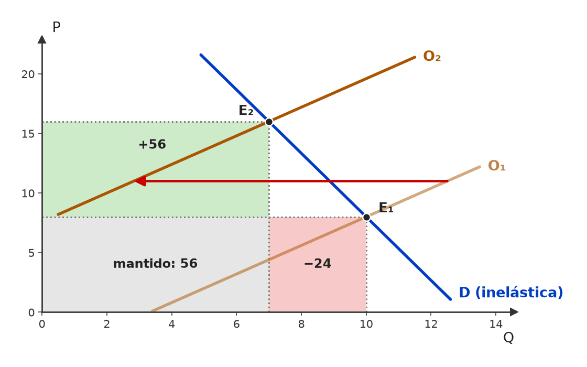 Com demanda inelástica, a contração da oferta (O₁ → O₂) leva o preço de 8 a 16 e a quantidade de 10 a 7: a receita passa de 80 para 112. O ganho no preço (verde, +56) supera a perda na quantidade (vermelho, −24). 🧐 Dissecando a redação do item: [inversão · nexo indevido] O item inverte o efeito sobre a receita e, sobre a inversão, constrói a conclusão (“não vale a pena”). A palavra “essencial” é a pista: ela sinaliza demanda inelástica, e inelástica + preço ↑ = receita ↑. 🔥 A banca junta essencialidade, elasticidade e receita no mesmo item. 😈 Para dificultar:
✍️ Reescrita correta: Para os ofertantes de um bem essencial pode valer a pena reduzir a oferta desse bem para forçar o aumento do preço, uma vez que a sua receita total aumentará ao fim do processo, dada a demanda inelástica. |
❌ [C/E - Banca não identificada › Elasticidade, receita e gasto]Julgue o item a seguir, relativo à elasticidade-preço da demanda. [Enunciado reconstruído: na fonte, a frente era só uma imagem, não preservada.] Item: Considerando que haja relação positiva entre criminalidade e gastos com o consumo de drogas e que a demanda por drogas seja preço-inelástica, políticas antidrogas fundamentadas no combate ao tráfico elevarão o preço das drogas e os gastos com esses produtos, agravando os níveis de criminalidade. | ✅ CERTO Considerando que haja relação positiva entre criminalidade e gastos com o consumo de drogas e que a demanda por drogas seja preço-inelástica, políticas antidrogas fundamentadas no combate ao tráfico elevarão o preço das drogas e os gastos com esses produtos, agravando os níveis de criminalidade. 🎯 Em poucas palavras: Combater o tráfico reduz a oferta e eleva o preço; com demanda inelástica, a quantidade cai proporcionalmente menos que o preço sobe, o gasto (p × q) aumenta e, pela premissa dada, a criminalidade também. 📖 Destrinchando o tema:
📈 No gráfico: 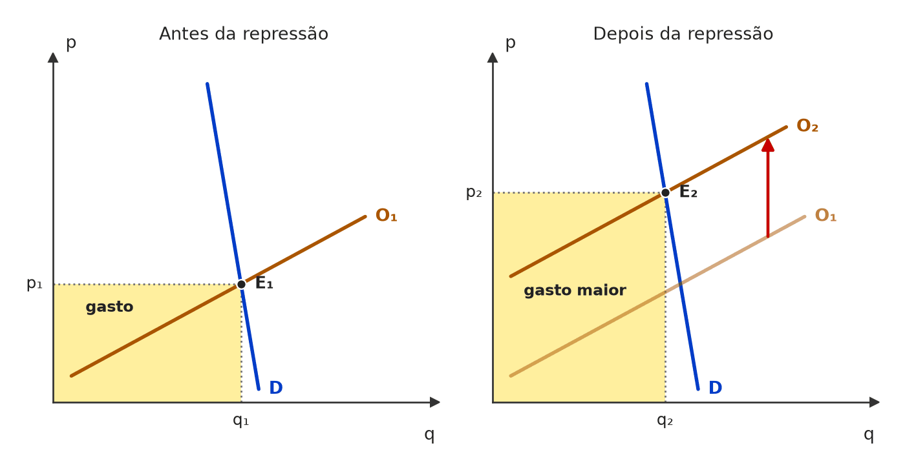 Demanda inelástica (quase vertical): o combate ao tráfico desloca a oferta para a esquerda (O₁ → O₂); o preço sobe muito, a quantidade cai pouco e o gasto total (retângulo p × q) aumenta. 🧐 Dissecando a redação do item: [contraintuitivo] Verdadeiro, mas contra o senso comum de que reprimir o tráfico sempre reduz o crime. A banca entrega as duas premissas (“relação positiva” e “preço-inelástica”): o julgamento é dedução, não opinião sobre política de drogas. 🔥 “Inelástica + choque de oferta → gasto sobe” é cobrança recorrente. 😈 Para dificultar:
|
[C/E - Banca não identificada › Elasticidade, receita e gasto]Julgue o item a seguir, relativo à elasticidade-preço da demanda e à receita total. Item: Após estudos, uma consultoria determinou que o equilíbrio do mercado do bem Y encontra-se em um ponto de baixa elasticidade-preço da demanda. É previsível que os fornecedores com poder de mercado aumentem os preços. | ✅ CERTO Após estudos, uma consultoria determinou que o equilíbrio do mercado do bem Y encontra-se em um ponto de baixa elasticidade-preço da demanda. É previsível que os fornecedores com poder de mercado aumentem os preços. 🎯 Em poucas palavras: No trecho inelástico, subir o preço aumenta a receita e, como se vende menos, reduz o custo: o lucro sobe. Quem pode fixar preço (poder de mercado) tem todo incentivo a elevá-lo. 📖 Destrinchando o tema:
🧐 Dissecando a redação do item: [paráfrase fiel · detalhe] O item é seguro porque restringe a conclusão aos fornecedores com poder de mercado e usa “previsível”, não “necessário”. Tire esse qualificador e o item fica discutível (tomadores de preço não escolhem preço). 😈 Para dificultar:
|
[C/E - CEBRASPE › TJ/PA/2025 › Elasticidade-renda e cruzada]Julgue os itens a seguir, a respeito de determinação das curvas de procura, elasticidade, produtividade e custos de produção. Item: A elasticidade-preço cruzada da demanda é negativa para bens substitutos e positiva para bens complementares. | ❌ ERRADO A elasticidade-preço cruzada da demanda é negativa para bens substitutos e positiva para bens complementares. 🎯 Em poucas palavras: Sinais invertidos: substitutos → cruzada positiva; complementares → cruzada negativa. 📖 Destrinchando o tema:
🧐 Dissecando a redação do item: [inversão] Os dois sinais trocados ao mesmo tempo deixam a frase internamente coerente, o que engana quem lê rápido. Basta checar um dos pares com um exemplo concreto para derrubar o item. 🔥 Variante do mesmo ponto em simulados: “cruzada negativa → substitutos” (só um rótulo trocado). 😈 Para dificultar:
✍️ Reescrita correta: A elasticidade-preço cruzada da demanda é positiva para bens substitutos e negativa para bens complementares. |
[C/E - FGV › DPE/RS/Analista/2023 › Elasticidade-renda e cruzada]Julgue o item a seguir, relativo às elasticidades da demanda. Item: O valor da elasticidade-preço cruzada indica se um bem é de luxo ou essencial. | ❌ ERRADO O valor da elasticidade-preço cruzada indica se um bem é de luxo ou essencial. 🎯 Em poucas palavras: Luxo × essencial se mede pela elasticidade-renda. A cruzada classifica a relação entre dois bens: substitutos, complementares ou independentes. 📖 Destrinchando o tema:
🧐 Dissecando a redação do item: [troca de conceito] O item troca uma elasticidade por outra: a classificação luxo × essencial é a da elasticidade-renda. Pista: “cruzada” sempre envolve dois bens; luxo/essencial é atributo de um bem. 🔥 Itens de classificação de bens costumam trocar as três elasticidades entre si. 😈 Para dificultar:
✍️ Reescrita correta: O valor da elasticidade-renda indica se um bem é de luxo ou essencial. |
[C/E - FGV › BADESC/Economista/2010 › Elasticidade-renda e cruzada]Julgue o item a seguir, relativo às elasticidades da demanda. Item: Para bens complementares, a elasticidade-preço cruzada da demanda é negativa. | ✅ CERTO Para bens complementares, a elasticidade-preço cruzada da demanda é negativa. 🎯 Em poucas palavras: Complementares são consumidos juntos: se pY sobe, cai a demanda por X. Sinais opostos → εXY < 0. 📖 Destrinchando o tema:
🧐 Dissecando a redação do item: [literalidade] Definição de manual, sem modulador. O risco é a inversão mental dos sinais (substituto ↔ complementar). Teste: “consumidos juntos → caem juntos → sinal negativo”. 😈 Para dificultar:
|
❌ [C/E - Armstrong › Pré-TPS/2026 › Elasticidade-renda e cruzada]Acerca dos determinantes e das aplicações da elasticidade, julgue o item a seguir. Item: A elasticidade-preço cruzada dispensa avaliar delimitação de mercado: positiva indica bens substitutos; negativa indica bens complementares, sem ressalvas. | ❌ ERRADO A elasticidade-preço cruzada dispensa avaliar delimitação de mercado: positiva indica bens substitutos; negativa indica bens complementares, sem ressalvas. 🎯 Em poucas palavras: O sinal está certo (positiva → substitutos; negativa → complementares), mas a interpretação depende do mercado relevante e do contexto da medida: não se dispensa delimitação nem ressalvas. 📖 Destrinchando o tema:
🧐 Dissecando a redação do item: [modulador absoluto · meia-verdade] A regra de sinais é verdadeira; o erro está nos absolutos “dispensa” e “sem ressalvas”. Quem reconhece a regra de sinais e para de ler marca CERTO — foi o erro registrado aqui. 😈 Para dificultar:
✍️ Reescrita correta: A elasticidade-preço cruzada não dispensa avaliar delimitação de mercado: positiva indica bens substitutos; negativa indica bens complementares, mas a interpretação depende do escopo do mercado relevante. |
[C/E - Nabuco › Elasticidade-renda e cruzada]A respeito dos conceitos e aplicações da elasticidade, julgue os itens a seguir. Item: Se a elasticidade-preço cruzada da demanda entre os bens A e B é negativa, um aumento no preço do bem A levará a uma redução na quantidade demandada do bem B, indicando que A e B são bens complementares. | ✅ CERTO Se a elasticidade-preço cruzada da demanda entre os bens A e B é negativa, um aumento no preço do bem A levará a uma redução na quantidade demandada do bem B, indicando que A e B são bens complementares. 🎯 Em poucas palavras: Cruzada negativa = preço de um e quantidade do outro em sentidos opostos = complementares (consumidos juntos). 📖 Destrinchando o tema:
🧐 Dissecando a redação do item: [literalidade] Encadeia definição → mecanismo → classificação, tudo coerente. O risco é ler “negativa” e associar a “substitutos” por pressa. 🔥 Regra de sinais é cobrada em quase todo bloco de elasticidades. 😈 Para dificultar:
|
[C/E - Nabuco › Elasticidade-renda e cruzada]Em relação à microeconomia, julgue os seguintes itens. Item: Um bem normal apresenta elasticidade-renda nula. | ❌ ERRADO Um bem normal apresenta elasticidade-renda nula. 🎯 Em poucas palavras: Bem normal é aquele cujo consumo sobe com a renda: η > 0. Elasticidade-renda nula indica consumo insensível à renda. 📖 Destrinchando o tema:
🧐 Dissecando a redação do item: [dado alterado · troca de conceito] Troca o sinal que define a categoria (positivo → nulo). Pista: a palavra “normal” não sugere “neutro”; a classificação é sempre pelo sinal de η. 😈 Para dificultar:
✍️ Reescrita correta: Um bem normal apresenta elasticidade-renda positiva. |
[C/E - Nabuco › Elasticidade-renda e cruzada]Em relação à microeconomia, julgue os seguintes itens. Item: Um bem inferior apresenta elasticidade-renda negativa. | ✅ CERTO Um bem inferior apresenta elasticidade-renda negativa. 🎯 Em poucas palavras: Bem inferior: a renda sobe e o consumo cai — numerador e denominador de η com sinais opostos, logo η < 0. 📖 Destrinchando o tema:
🧐 Dissecando a redação do item: [literalidade] Definição direta. O risco é a confusão inferior × necessário (η < 1) ou inferior × Giffen. 🔥 Itens vizinhos do mesmo bloco testam “normal = nula” e “inferior = menor que 1” (ambos ERRADOS). 😈 Para dificultar:
|
[C/E - Nabuco › Elasticidade-renda e cruzada]Em relação à microeconomia, julgue os seguintes itens. Item: A elasticidade-preço cruzada da demanda é negativa para bens substitutos e positiva para bens complementares. | ❌ ERRADO A elasticidade-preço cruzada da demanda é negativa para bens substitutos e positiva para bens complementares. 🎯 Em poucas palavras: Sinais invertidos: substitutos → cruzada positiva; complementares → cruzada negativa. 📖 Destrinchando o tema:
🧐 Dissecando a redação do item: [inversão] Inversão pura dos dois sinais, mantendo a estrutura da definição. Quem associa “complementar” a “positivo” (sentido de “somar”) cai. 🔥 A Nabuco repete essa troca em vários blocos. 🧠 Mnemônico:
✍️ Reescrita correta: A elasticidade-preço cruzada da demanda é positiva para bens substitutos e negativa para bens complementares. |
[C/E - Nidi/Jacqueline Bueno › Simulado Março/2025 › Elasticidade-renda e cruzada]Os agentes microeconômicos fazem suas escolhas de forma racional em um cenário de informações completas e simetricamente distribuídas. A respeito da Teoria do Consumidor, julgue certo ou errado (C ou E) os itens a seguir. Item: O sinal esperado da elasticidade-renda da demanda depende do tipo de bem que está sendo avaliado. Sendo assim, espera-se que, na avaliação de um bem normal, a elasticidade-renda da demanda apresente sinal positivo. | ✅ CERTO O sinal esperado da elasticidade-renda da demanda depende do tipo de bem que está sendo avaliado. Sendo assim, espera-se que, na avaliação de um bem normal, a elasticidade-renda da demanda apresente sinal positivo. 🎯 Em poucas palavras: Bem normal é, por definição, aquele cujo consumo sobe quando a renda sobe: renda e quantidade no mesmo sentido → εR > 0. 📖 Destrinchando o tema:
🧐 Dissecando a redação do item: [literalidade] Definição direta. A primeira frase (“depende do tipo de bem”) prepara o terreno e é verdadeira; o “espera-se” suaviza, mas para bem normal o sinal positivo é definicional. Risco: confundir normal com necessário e achar que o sinal dependeria de |ε| > 1. 😈 Para dificultar:
|
[C/E - Nidi/Jacqueline Bueno › Simulado Março/2025 › Elasticidade-renda e cruzada]Os agentes microeconômicos fazem suas escolhas de forma racional em um cenário de informações completas e simetricamente distribuídas. A respeito da Teoria do Consumidor, julgue certo ou errado (C ou E) os itens a seguir. Item: Quanto menor for a elasticidade-preço cruzada da demanda entre um bem e seu substituto, maior será a capacidade da empresa ofertante deste bem controlar o preço prevalecente no mercado. | ✅ CERTO Quanto menor for a elasticidade-preço cruzada da demanda entre um bem e seu substituto, maior será a capacidade da empresa ofertante deste bem controlar o preço prevalecente no mercado. 🎯 Em poucas palavras: Cruzada baixa = o substituto é distante: quando a empresa sobe o preço, o consumidor não migra. Isso é poder de mercado. 📖 Destrinchando o tema:
🧐 Dissecando a redação do item: [paráfrase fiel · contraintuitivo] A relação é inversa (menor cruzada → maior controle), e itens com “quanto menor… maior…” costumam ser montados para pegar quem espera relação direta. Raciocine pelo extremo: cruzada zero = nenhum substituto de verdade = monopólio. 😈 Para dificultar:
|
[C/E - Simulado Sapientia › Simulado Set/2024 › Elasticidade-renda e cruzada]Julgue o item a seguir, relativo à elasticidade-renda da demanda. [Enunciado reconstruído: na fonte, a frente era só uma imagem, não preservada.] Item: Se um consumidor gasta toda a sua renda em apenas dois bens, é possível que ambos sejam bens de luxo, isto é, que ambos tenham elasticidade-renda da demanda maior que um. | ❌ ERRADO Se um consumidor gasta toda a sua renda em apenas dois bens, é possível que ambos sejam bens de luxo, isto é, que ambos tenham elasticidade-renda da demanda maior que um. 🎯 Em poucas palavras: Da restrição orçamentária sai a condição de agregação de Engel: s₁η₁ + s₂η₂ = 1, com s = parcela da renda gasta em cada bem. Se os dois η fossem maiores que 1, a soma passaria de 1. 📖 Destrinchando o tema:
🧐 Dissecando a redação do item: [outro: impossibilidade lógica] O item parece plausível porque cada bem, isoladamente, pode ser de luxo; o erro está no “ambos”, que viola a restrição orçamentária. Pista: sempre que a banca disser que todos os bens de uma cesta têm a mesma classificação-limite, verifique a agregação de Engel. 😈 Para dificultar:
✍️ Reescrita correta: Se um consumidor gasta toda a sua renda em apenas dois bens, não é possível que ambos sejam bens de luxo, pois a média das elasticidades-renda, ponderada pelas parcelas da renda, é igual a um. |
❌ [ME - Intensivo MM › Intensivo Pré-TPS/2024 › Elasticidade-renda e cruzada]Leia o enunciado a seguir e assinale a opção correta. [Enunciado reconstruído: na fonte, a frente era só uma imagem, não preservada.] Questão: Um consumidor recebe a renda mensal de 100 unidades monetárias (u.m.) e decide gastá-la comprando 2 bens, X e Y. Gasta mensalmente 70 u.m. com X e 30 u.m. com Y. A partir de certo mês, sua renda aumenta em 10 u.m., mas os preços de X e Y não se alteram. Em consequência, o consumidor aumenta em 7 u.m. seus gastos com X e em 3 u.m. seus gastos com Y. Essas informações indicam que a elasticidade-renda da demanda do consumidor por X é igual a (A) 10% (B) 7/10 = 0,7 (C) zero (D) 1 (E) 7 u.m. | 🔵 Letra D ❌ (A) 10% ❌ (B) 7/10 = 0,7 ❌ (C) zero ✅ (D) 1 ❌ (E) 7 u.m. 🎯 Em poucas palavras: A renda subiu 10% (100 → 110) e o gasto com X também 10% (70 → 77); com preço constante, a quantidade de X subiu 10%. εR = 10% ÷ 10% = 1. 📖 Destrinchando o tema:
🧐 Dissecando a redação do item: [troca de conceito · dado alterado] Os distratores são as contas “quase certas”: a razão de valores absolutos (0,7), a variação percentual isolada (10%) e a variação absoluta (7 u.m.). Quem sabe que elasticidade é razão de percentuais elimina três de cara. 😈 Para dificultar:
|
❌ [C/E - Nidi/Jacqueline Bueno › Simulado 07/2023 › Elasticidade-renda e cruzada]Julgue o item a seguir, relativo à elasticidade-preço cruzada da demanda. Item: A capacidade de um país produtor de uma commodity controlar o preço desse bem no mercado internacional é menor, quanto menor for a elasticidade preço cruzada da demanda entre o produto oferecido por ele e o produto oferecido pelos demais países ofertantes desse mercado. | ❌ ERRADO A capacidade de um país produtor de uma commodity controlar o preço desse bem no mercado internacional é menor, quanto menor for a elasticidade preço cruzada da demanda entre o produto oferecido por ele e o produto oferecido pelos demais países ofertantes desse mercado. 🎯 Em poucas palavras: Elasticidade cruzada baixa = o produto do país é mal substituído pelo dos concorrentes = mais poder de fixar preço. A relação é inversa. 📖 Destrinchando o tema:
🧐 Dissecando a redação do item: [inversão] A frase mantém a estrutura “quanto menor…, menor…”, que soa natural, mas a relação correta é inversa (“quanto menor a cruzada, maior o controle”). 🔥 Correlações do tipo “quanto mais/menos” pedem que se confira o sentido de cada ponta. 😈 Para dificultar:
✍️ Reescrita correta: A capacidade de um país produtor de uma commodity controlar o preço desse bem no mercado internacional é maior, quanto menor for a elasticidade preço cruzada da demanda entre o produto oferecido por ele e o produto oferecido pelos demais países ofertantes desse mercado. |
❌ [C/E - Prof. Rodrigo Teixeira › Intensivo Pré-TPS/2023 › Elasticidade-renda e cruzada]Acerca dos conceitos e teorias da microeconomia, julgue os itens a seguir. Item: Se a elasticidade cruzada entre dois bens é negativa, estes bens são substitutos. | ❌ ERRADO Se a elasticidade cruzada entre dois bens é negativa, estes bens são substitutos. 🎯 Em poucas palavras: Elasticidade cruzada negativa = complementares (o preço de um sobe, a demanda do outro cai). Substitutos têm cruzada positiva. 📖 Destrinchando o tema:
🧐 Dissecando a redação do item: [troca de conceito] Troca o rótulo da relação mantendo o sinal. É o erro mais frequente do tema. 🔥 O mesmo ponto, com os dois sinais invertidos de uma vez, caiu no CEBRASPE (TJ/PA/2025). 😈 Para dificultar:
✍️ Reescrita correta: Se a elasticidade cruzada entre dois bens é negativa, estes bens são complementares. |
[C/E - Nabuco › Elasticidade-renda e cruzada]Com relação às intervenções governamentais no equilíbrio de mercado e o conceito de elasticidade, julgue os seguintes itens. Item: Um bem inferior é um bem com elasticidade-renda da demanda menor que 1. | ❌ ERRADO Um bem inferior é um bem com elasticidade-renda da demanda menor que 1. 🎯 Em poucas palavras: Bem inferior tem η < 0. Elasticidade-renda entre 0 e 1 caracteriza bem normal necessário, não inferior. 📖 Destrinchando o tema:
🧐 Dissecando a redação do item: [troca de conceito · dado alterado] Troca o limiar que define a categoria (0 → 1), confundindo inferior com necessário. Pista: “inferior” fala da direção da resposta (sinal); “necessário × luxo” fala da intensidade (maior ou menor que 1). 😈 Para dificultar:
✍️ Reescrita correta: Um bem inferior é um bem com elasticidade-renda da demanda negativa (menor que 0). |
[C/E - Nabuco › Elasticidade-renda e cruzada]Com relação às intervenções governamentais no equilíbrio de mercado e o conceito de elasticidade, julgue os seguintes itens. Item: Um bem é denominado bem complementar se a elasticidade-preço cruzada da demanda desse bem for negativa. | ✅ CERTO Um bem é denominado bem complementar se a elasticidade-preço cruzada da demanda desse bem for negativa. 🎯 Em poucas palavras: Complementares são consumidos juntos: a alta do preço de um reduz a quantidade do outro, e a elasticidade-preço cruzada é negativa. 📖 Destrinchando o tema:
🧐 Dissecando a redação do item: [literalidade] Definição de manual pelo sinal. A imprecisão (“desse bem”, sem dizer em relação a qual) não basta para tornar o item errado. 🔥 O mesmo bloco cobra “inferior = menor que 1” (ERRADO), para testar se o candidato distingue sinal de intensidade. 😈 Para dificultar:
|
[C/E - Banca não identificada › 2022 › Elasticidade-renda e cruzada]Julgue o item a seguir, relativo à elasticidade-renda da demanda. Item: Um produto ter elasticidade-renda unitária significa que um aumento de percentual na renda do consumidor não produzirá efeito na receita total auferida pelo vendedor. | ❌ ERRADO Um produto ter elasticidade-renda unitária significa que um aumento de percentual na renda do consumidor não produzirá efeito na receita total auferida pelo vendedor. 🎯 Em poucas palavras: Elasticidade-renda unitária: renda +10% → quantidade demandada +10%. A preço constante, a receita do vendedor também sobe 10%. Quem deixa a receita intacta é a elasticidade-preço unitária. 📖 Destrinchando o tema:
🧐 Dissecando a redação do item: [troca de conceito] O item pega a propriedade da elasticidade-preço unitária (receita constante) e a cola na elasticidade-renda unitária. Pista: renda maior com preço inalterado só pode aumentar ou reduzir compras — e, sendo η = 1 > 0, aumenta. 😈 Para dificultar:
✍️ Reescrita correta: Um produto ter elasticidade-renda unitária significa que um aumento de percentual na renda do consumidor produzirá, mantido o preço, aumento de igual percentual na quantidade demandada e na receita total auferida pelo vendedor. |
[C/E - Banca não identificada › Elasticidade-renda e cruzada]Julgue o item a seguir, relativo à elasticidade-preço cruzada da demanda. Item: É correto afirmar que “Caso dois bens, A e B, apresentem elasticidade positiva em termos de preço cruzado da demanda, podemos afirmar que os bens A e B seriam bens substitutos.”? | ✅ CERTO É correto afirmar que “Caso dois bens, A e B, apresentem elasticidade positiva em termos de preço cruzado da demanda, podemos afirmar que os bens A e B seriam bens substitutos.”? 🎯 Em poucas palavras: Elasticidade cruzada positiva: o preço de B sobe e a quantidade demandada de A também sobe — o consumidor migra de B para A. É a marca dos substitutos. 📖 Destrinchando o tema:
🧐 Dissecando a redação do item: [literalidade] Definição de manual, com a redação truncada típica de questionário (“em termos de preço cruzado”). O risco é inverter os sinais. Item-irmão, quase idêntico: ECO-E1-0114-1. 😈 Para dificultar:
|
[C/E - Banca não identificada › Elasticidade-renda e cruzada]Julgue o item a seguir, relativo à elasticidade-preço cruzada da demanda. Item: Elasticidade-preço cruzada da demanda é a variação proporcional na quantidade demandada de um dado bem dividida pela variação proporcional no preço de outro bem. | ✅ CERTO Elasticidade-preço cruzada da demanda é a variação proporcional na quantidade demandada de um dado bem dividida pela variação proporcional no preço de outro bem. 🎯 Em poucas palavras: Definição exata: εxy = %ΔQx / %ΔPy. “Proporcional” = percentual; o preço é de outro bem — se fosse do próprio, seria a elasticidade-preço direta. 📖 Destrinchando o tema:
🧐 Dissecando a redação do item: [literalidade] Definição de manual. Itens ERRADOS sobre ela costumam trocar o “outro bem” pelo próprio bem (vira elasticidade direta) ou o preço pela renda (vira elasticidade-renda). 😈 Para dificultar:
|
[C/E - Banca não identificada › Elasticidade-renda e cruzada]Julgue o item a seguir, relativo às elasticidades-renda e preço da demanda. Item: A elasticidade-renda da demanda pode ser positiva, nula ou negativa, ao passo em que a elasticidade-preço da demanda é sempre negativa (fora do módulo) devido à lei geral da demanda. | ✅ CERTO A elasticidade-renda da demanda pode ser positiva, nula ou negativa, ao passo em que a elasticidade-preço da demanda é sempre negativa (fora do módulo) devido à lei geral da demanda. 🎯 Em poucas palavras: O sinal da elasticidade-renda depende do tipo de bem (normal, inferior, neutro). O da elasticidade-preço é negativo porque preço e quantidade demandada andam em sentidos opostos — a lei da demanda. ⚠️ Gabarito contestável: O “sempre” ignora o bem de Giffen, cuja demanda sobe com o preço (elasticidade-preço positiva). O item se salva por ancorar o sinal na lei da demanda: onde a lei vale, ε < 0. Numa prova que cobrasse Giffen, a versão “sempre negativa” seria ERRADA. 📖 Destrinchando o tema:
🧐 Dissecando a redação do item: [literalidade · detalhe] O item reúne duas regras de manual. O ponto sensível é o “sempre”, normalmente sinal de ERRADO; aqui ele é atenuado por “devido à lei geral da demanda”, que delimita o universo em que a afirmação vale. 😈 Para dificultar:
|
[C/E - Banca não identificada › Elasticidade-renda e cruzada]Julgue o item a seguir, relativo à classificação dos bens pela elasticidade cruzada. Item: Se o aumento de preço do bem X provocar o aumento da demanda do bem Y, pode-se dizer que esses bens X e Y são complementares. | ❌ ERRADO Se o aumento de preço do bem X provocar o aumento da demanda do bem Y, pode-se dizer que esses bens X e Y são complementares. 🎯 Em poucas palavras: PX ↑ → demanda de Y ↑ é elasticidade cruzada positiva: X e Y são substitutos. Complementares reagiriam ao contrário (PX ↑ → demanda de Y ↓). 📖 Destrinchando o tema:
🧐 Dissecando a redação do item: [troca de conceito] O mecanismo está descrito corretamente; só o rótulo final foi trocado. Pista: “aumento… provocar o aumento” — mesmo sentido → sinal positivo → substitutos. 🧠 Mnemônico:
😈 Para dificultar:
✍️ Reescrita correta: Se o aumento de preço do bem X provocar o aumento da demanda do bem Y, pode-se dizer que esses bens X e Y são substitutos. |
[C/E - Banca não identificada › Elasticidade-renda e cruzada]Julgue o item a seguir, relativo à classificação dos bens pela elasticidade cruzada. Item: Se a elasticidade preço cruzada entre os bens A e B é positiva, então A e B são substitutos. | ✅ CERTO Se a elasticidade preço cruzada entre os bens A e B é positiva, então A e B são substitutos. 🎯 Em poucas palavras: Cruzada positiva = o preço de um sobe e a demanda pelo outro também sobe: o consumidor troca um pelo outro — substitutos. 📖 Destrinchando o tema:
🧐 Dissecando a redação do item: [literalidade] Regra do sinal, sem armadilha. Item-irmão quase idêntico: ECO-E1-0011-1; espelho com sinal negativo: ECO-E1-0115-1. 😈 Para dificultar:
|
[C/E - Banca não identificada › Elasticidade-renda e cruzada]Julgue o item a seguir, relativo à classificação dos bens pela elasticidade cruzada. Item: Se a elasticidade preço cruzada entre os bens A e B é negativa, então tais bens são complementares. | ✅ CERTO Se a elasticidade preço cruzada entre os bens A e B é negativa, então tais bens são complementares. 🎯 Em poucas palavras: Cruzada negativa = o preço de um sobe e a demanda pelo outro cai: os bens são consumidos juntos — complementares. 📖 Destrinchando o tema:
🧐 Dissecando a redação do item: [literalidade] Espelho de ECO-E1-0114-1 (sinal positivo → substitutos). A banca costuma testar o par na mesma prova, trocando o sinal ou o rótulo. 😈 Para dificultar:
|
[C/E - Banca não identificada › Elasticidade-renda e cruzada]Julgue o item a seguir, relativo às aplicações das elasticidades da demanda. Item: Utiliza-se as elasticidades também para medir a “prioridade” de um certo bem no consumo. | ✅ CERTO Utiliza-se as elasticidades também para medir a “prioridade” de um certo bem no consumo. 🎯 Em poucas palavras: A elasticidade-renda revela o lugar do bem na hierarquia do consumo: necessidades (0 < η < 1) vêm primeiro; luxos (η > 1) ganham espaço quando a renda sobe; inferiores (η < 0) são abandonados. 📖 Destrinchando o tema:
🧐 Dissecando a redação do item: [paráfrase fiel · modulador relativo] Redação informal e vaga, com “prioridade” entre aspas para sinalizar sentido figurado. O “também” reduz o alcance: as elasticidades servem a isso, entre outros usos. Itens vagos assim tendem a CERTO quando não há termo falso. 😈 Para dificultar:
|
[C/E - Banca não identificada › Elasticidade-renda e cruzada]Julgue o item a seguir, relativo à elasticidade-renda da demanda. Item: A elasticidade-renda da demanda (ERD) mede como a quantidade demandada responde a alterações do preço. | ❌ ERRADO A elasticidade-renda da demanda (ERD) mede como a quantidade demandada responde a alterações do preço. 🎯 Em poucas palavras: A elasticidade-renda mede a resposta da quantidade demandada a variações da renda do consumidor; a resposta ao preço é medida pela elasticidade-preço. 📖 Destrinchando o tema:
🧐 Dissecando a redação do item: [troca de conceito] Mantém o nome correto (“elasticidade-renda”) e troca só a variável explicativa. Pista: o nome da elasticidade é sempre o nome do denominador. 😈 Para dificultar:
✍️ Reescrita correta: A elasticidade-renda da demanda (ERD) mede como a quantidade demandada responde a alterações da renda do consumidor. |
[C/E - IDEG – Prof. Bozan › Pré-TPS/2026 › Elasticidade da oferta]Com base na elasticidade e suas tipologias, julgue as assertivas a seguir acerca de bens duráveis e não duráveis em diferentes prazos. Item: A elasticidade preço da oferta unitária implica que a quantidade ofertada varia na mesma proporção que o preço do produto. Assim, um aumento de 20% no preço geraria um aumento de 20% na quantidade ofertada, não alterando a receita total do vendedor, já que o aumento na quantidade ofertada compensa exatamente o aumento no preço. | ❌ ERRADO A elasticidade preço da oferta unitária implica que a quantidade ofertada varia na mesma proporção que o preço do produto. Assim, um aumento de 20% no preço geraria um aumento de 20% na quantidade ofertada, não alterando a receita total do vendedor, já que o aumento na quantidade ofertada compensa exatamente o aumento no preço. 🎯 Em poucas palavras: Na oferta, P e Q sobem juntos: com +20% em cada, a receita vai a 1,2 × 1,2 = 1,44 — alta de 44%. “Receita constante” é propriedade da demanda unitária, onde P e Q andam em sentidos opostos. 📖 Destrinchando o tema:
🧐 Dissecando a redação do item: [meia-verdade · troca de conceito] A definição de oferta unitária está correta; o erro foi enxertado na conclusão, que transplanta para a oferta o teste da receita da demanda. Pista: “compensa” supõe sentidos opostos, mas o próprio item diz que os dois aumentam. 😈 Para dificultar:
✍️ Reescrita correta: A elasticidade preço da oferta unitária implica que a quantidade ofertada varia na mesma proporção que o preço do produto. Assim, um aumento de 20% no preço geraria um aumento de 20% na quantidade ofertada, elevando a receita total do vendedor (vendidas essas quantidades, em cerca de 44%), já que preço e quantidade aumentam juntos. |
[C/E - Nidi/Jacqueline Bueno › Fevereiro/2026 › Elasticidade da oferta]Com base na teoria microeconômica, julgue o item. Item: Se a oferta de um bem tiver elasticidade zero em relação ao preço, a demanda determinará unicamente o preço de equilíbrio da transação. | ✅ CERTO Se a oferta de um bem tiver elasticidade zero em relação ao preço, a demanda determinará unicamente o preço de equilíbrio da transação. 🎯 Em poucas palavras: Oferta com ε = 0 é vertical: a quantidade está fixada. Onde a demanda cortar essa vertical, ali estará o preço — a demanda o determina sozinha. 📖 Destrinchando o tema:
📈 No gráfico: 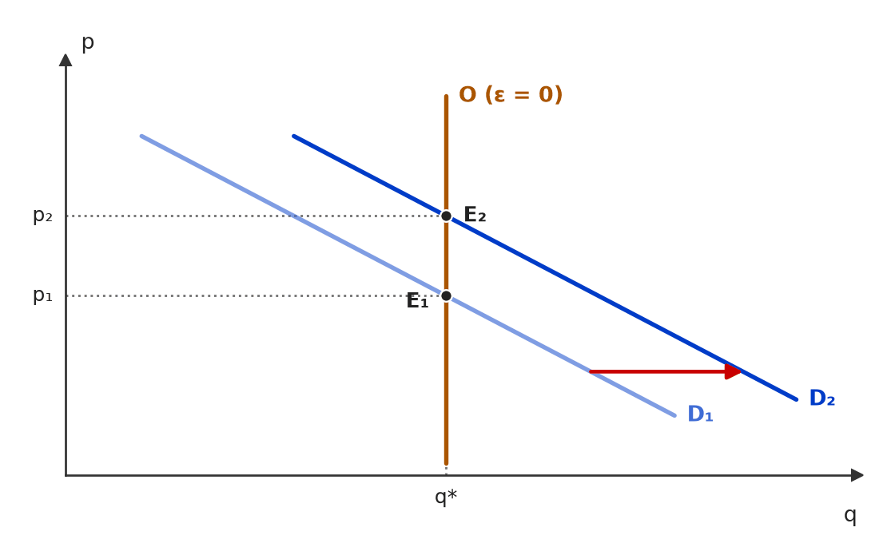 Com oferta vertical (elasticidade zero), a quantidade fica travada em q*: quando a demanda se desloca (D₁ → D₂), só o preço muda (p₁ → p₂). A posição da demanda decide o preço; a oferta decide a quantidade. 🧐 Dissecando a redação do item: [detalhe · contraintuitivo] O “unicamente” parece modulador absoluto e induz o candidato a marcar ERRADO por reflexo; aqui ele é verdadeiro, porque a oferta vertical não tem papel nenhum na formação do preço. Lição: modulador absoluto não é erro automático — teste-o no caso extremo. 😈 Para dificultar:
|
[C/E - Banca não identificada › 2017 › Elasticidade da oferta]Julgue o item a seguir, relativo à elasticidade-preço da oferta e ao equilíbrio de mercado. Item: Se a oferta de um bem tiver elasticidade zero em relação ao preço, a demanda determinará unicamente o preço de equilíbrio da transação. | ✅ CERTO Se a oferta de um bem tiver elasticidade zero em relação ao preço, a demanda determinará unicamente o preço de equilíbrio da transação. 🎯 Em poucas palavras: Oferta com elasticidade zero é vertical: a quantidade está fixada. A demanda não consegue mudar a quantidade — só o preço. 📖 Destrinchando o tema:
📈 No gráfico: 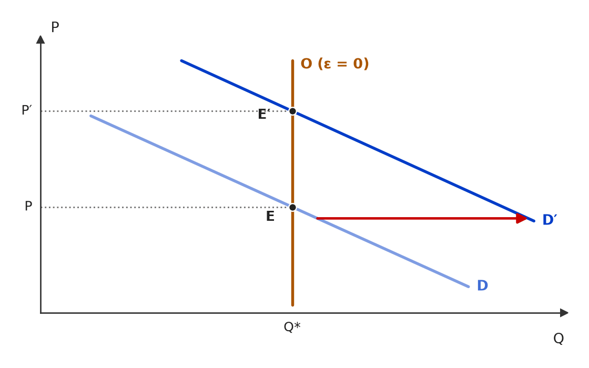 Oferta com elasticidade zero é vertical em Q*: quando a demanda aumenta (D → D′), a quantidade não muda e só o preço sobe (P → P′). A demanda determina unicamente o preço. 🧐 Dissecando a redação do item: [contraintuitivo · literalidade] O “unicamente” costuma denunciar erro, mas aqui descreve o caso-limite com precisão. Atenção ao objeto: o item fala de oferta inelástica, não de demanda — quem troca as curvas conclui o contrário. 😈 Para dificultar:
|
[C/E - Banca não identificada › Elasticidade da oferta]Julgue o item a seguir, relativo à elasticidade-preço da oferta. Item: Mudanças lentas e previsíveis na curva de demanda de um mercado são compatíveis com uma curva de oferta com alta elasticidade-preço. | ✅ CERTO Mudanças lentas e previsíveis na curva de demanda de um mercado são compatíveis com uma curva de oferta com alta elasticidade-preço. 🎯 Em poucas palavras: Se a demanda muda devagar e de forma antecipável, os produtores têm tempo para ajustar capacidade, mão de obra e insumos: a quantidade ofertada acompanha o preço — oferta elástica. 📖 Destrinchando o tema:
🧐 Dissecando a redação do item: [paráfrase fiel · modulador relativo] O item não diz que a demanda “causa” a elasticidade: diz que os dois são compatíveis — formulação modesta e verdadeira. O candidato que procura um nexo causal rígido tende a marcar ERRADO sem motivo. 😈 Para dificultar:
|
[C/E - Banca não identificada › Elasticidade da oferta]Julgue o item a seguir, relativo às elasticidades-preço da oferta e da demanda. Item: Se a variação percentual da quantidade ofertada de um bem em relação à variação percentual do preço deste mesmo bem é maior do que 1, é correto afirmar que esse bem apresenta demanda elástica. | ❌ ERRADO Se a variação percentual da quantidade ofertada de um bem em relação à variação percentual do preço deste mesmo bem é maior do que 1, é correto afirmar que esse bem apresenta demanda elástica. 🎯 Em poucas palavras: %ΔQs/%ΔP > 1 é oferta elástica: a razão usa a quantidade ofertada. Nada se pode concluir sobre a demanda. 📖 Destrinchando o tema:
🧐 Dissecando a redação do item: [troca de conceito] O item descreve com precisão a elasticidade da oferta e troca só a última palavra. Pista: “quantidade ofertada” no início e “demanda” no fim. 😈 Para dificultar:
✍️ Reescrita correta: Se a variação percentual da quantidade ofertada de um bem em relação à variação percentual do preço deste mesmo bem é maior do que 1, é correto afirmar que esse bem apresenta oferta elástica. |
[C/E - Banca não identificada › Elasticidade da oferta]Julgue o item a seguir, relativo à elasticidade-preço da oferta. Item: A elasticidade-preço da oferta mede a variação percentual da quantidade ofertada de um bem em decorrência de uma variação percentual em seu preço. | ✅ CERTO A elasticidade-preço da oferta mede a variação percentual da quantidade ofertada de um bem em decorrência de uma variação percentual em seu preço. 🎯 Em poucas palavras: Definição literal: εˢ = %ΔQˢ / %ΔP. Pela lei da oferta, o sinal é positivo — preço e quantidade ofertada andam juntos. 📖 Destrinchando o tema:
🧐 Dissecando a redação do item: [literalidade] Reproduz a definição de manual. O risco seria uma troca sutil — “quantidade demandada” no lugar de “ofertada” ou “variação absoluta” no lugar de “percentual” —, que aqui não ocorre. 😈 Para dificultar:
|
[C/E - IDEG – Prof. Bozan › Pré-TPS/2026 › Determinantes e prazos]Com base na elasticidade e suas tipologias, julgue as assertivas a seguir acerca de bens duráveis e não duráveis em diferentes prazos. Item: A elasticidade renda da demanda para bens duráveis é maior no curto prazo, pois ao receber um aumento de renda, os consumidores tendem a alocar parte significativa de seus ganhos na aquisição desses bens, uma vez que representam uma proporção elevada em seus orçamentos. Isso pode resultar em um aumento mais acentuado na demanda, mesmo frente a elevações consideráveis nos preços. | ✅ CERTO A elasticidade renda da demanda para bens duráveis é maior no curto prazo, pois ao receber um aumento de renda, os consumidores tendem a alocar parte significativa de seus ganhos na aquisição desses bens, uma vez que representam uma proporção elevada em seus orçamentos. Isso pode resultar em um aumento mais acentuado na demanda, mesmo frente a elevações consideráveis nos preços. 🎯 Em poucas palavras: Para duráveis (carros, geladeiras), a resposta da demanda à renda é maior no curto prazo: quem enriquece antecipa a compra para ajustar o estoque desejado; depois, as compras voltam ao ritmo de reposição. 📖 Destrinchando o tema:
🧐 Dissecando a redação do item: [detalhe · contraintuitivo] Contraria a regra geral “elasticidades crescem com o tempo”: duráveis são a exceção clássica. Pista: o par de itens do bloco (duráveis × não duráveis) testa exatamente esse contraste. 😈 Para dificultar:
|
❌ [C/E - IDEG – Prof. Bozan › Pré-TPS/2026 › Determinantes e prazos]Com base na elasticidade e suas tipologias, julgue as assertivas a seguir acerca de bens duráveis e não duráveis em diferentes prazos. Item: Com relação aos bens não duráveis, a elasticidade renda da demanda tende a ser maior no longo prazo, pois ao decorrer do tempo, os consumidores ajustam seus padrões de consumo e exploram opções que maximizam sua utilidade, aumentando a proporção de consumo desses bens em seus orçamentos conforme a renda cresce. | ✅ CERTO Com relação aos bens não duráveis, a elasticidade renda da demanda tende a ser maior no longo prazo, pois ao decorrer do tempo, os consumidores ajustam seus padrões de consumo e exploram opções que maximizam sua utilidade, aumentando a proporção de consumo desses bens em seus orçamentos conforme a renda cresce. 🎯 Em poucas palavras: Para não duráveis e serviços, o consumo se adapta à nova renda gradualmente: a elasticidade-renda de longo prazo supera a de curto prazo. 📖 Destrinchando o tema:
🧐 Dissecando a redação do item: [modulador relativo · paráfrase fiel] “Tende a ser” protege o item de contraexemplos. Quem decorou só “duráveis: curto prazo” pode inverter e marcar ERRADO — foi o erro registrado nesta questão. 😈 Para dificultar:
|
[C/E - IDEG – Prof. Bozan › Pré-TPS/2026 › Determinantes e prazos]Com base na elasticidade e suas tipologias, julgue as assertivas a seguir acerca de bens duráveis e não duráveis em diferentes prazos. Item: A elasticidade renda da demanda para bens não duráveis diminui no curto prazo, uma vez que, apesar de um aumento de renda, os consumidores não têm a necessidade imediata de aumentar seu consumo desses bens, sendo que a proporção dotada para estes bens nos orçamentos tende a se estabilizar rapidamente. | ❌ ERRADO A elasticidade renda da demanda para bens não duráveis diminui no curto prazo, uma vez que, apesar de um aumento de renda, os consumidores não têm a necessidade imediata de aumentar seu consumo desses bens, sendo que a proporção dotada para estes bens nos orçamentos tende a se estabilizar rapidamente. 🎯 Em poucas palavras: A elasticidade-renda dos não duráveis não “diminui” no curto prazo: ela é menor no curto que no longo prazo porque o ajuste é lento, não porque a parcela no orçamento se estabilize rápido. 📖 Destrinchando o tema:
🧐 Dissecando a redação do item: [meia-verdade · nexo indevido] Parte verdadeira — a resposta de curto prazo é baixa — com dois enxertos: o verbo “diminui” (sugere queda, quando o certo é ser menor que no longo prazo) e a causa (estabilização rápida), que contradiz o próprio mecanismo de ajuste lento. 🔥 Itens de Bozan costumam errar pela justificativa. 😈 Para dificultar:
✍️ Reescrita correta: A elasticidade renda da demanda para bens não duráveis é menor no curto prazo do que no longo, uma vez que, apesar de um aumento de renda, os consumidores não têm a necessidade imediata de aumentar seu consumo desses bens, e o ajuste do padrão de consumo à nova renda é gradual. |
[C/E - Armstrong › Pré-TPS/2026 › Determinantes e prazos]Acerca dos determinantes e das aplicações da elasticidade, julgue o item a seguir. Item: Mesmo que muitos consumidores classifiquem um bem como “necessário”, a demanda agregada pode ser inelástica se, no mercado relevante, houver muitos substitutos próximos. | ❌ ERRADO Mesmo que muitos consumidores classifiquem um bem como “necessário”, a demanda agregada pode ser inelástica se, no mercado relevante, houver muitos substitutos próximos. 🎯 Em poucas palavras: Muitos substitutos próximos tornam a demanda elástica, ainda que a categoria seja vista como necessária: a necessidade é da categoria, não da marca ou da variedade. 📖 Destrinchando o tema:
🧐 Dissecando a redação do item: [inversão] O conector concessivo “mesmo que” anuncia um resultado contrário ao esperado de um bem necessário (inelástico) — o certo seria “elástica”. A palavra trocada é justamente a conclusão. Pista: conferir se a conclusão faz sentido com a concessão. 😈 Para dificultar:
✍️ Reescrita correta: Mesmo que muitos consumidores classifiquem um bem como “necessário”, a demanda agregada pode ser elástica se, no mercado relevante, houver muitos substitutos próximos. |
[C/E - Armstrong › Pré-TPS/2026 › Determinantes e prazos]Acerca dos determinantes e das aplicações da elasticidade, julgue o item a seguir. Item: Quanto mais estreita a definição do mercado, menor tende a ser a elasticidade-preço da demanda. | ❌ ERRADO Quanto mais estreita a definição do mercado, menor tende a ser a elasticidade-preço da demanda. 🎯 Em poucas palavras: Mercado estreito (uma marca, uma variedade) tem muitos substitutos próximos fora dele: a demanda é mais elástica. Mercado amplo (alimentos, energia) tem poucos substitutos: menos elástica. 📖 Destrinchando o tema:
🧐 Dissecando a redação do item: [inversão] Troca o sentido da relação (“menor” por “maior”). O modulador “tende a” é legítimo e não salva o item. Pista: imaginar o caso extremo — uma única marca entre dezenas iguais. 😈 Para dificultar:
✍️ Reescrita correta: Quanto mais estreita a definição do mercado, maior tende a ser a elasticidade-preço da demanda. |
[C/E - Armstrong › Pré-TPS/2026 › Determinantes e prazos]Acerca dos determinantes e das aplicações da elasticidade, julgue o item a seguir. Item: A mesma demanda pode parecer inelástica no curto prazo e mais elástica no longo, o que implica que choques de preço podem exigir respostas de política diferentes ao longo do tempo. | ✅ CERTO A mesma demanda pode parecer inelástica no curto prazo e mais elástica no longo, o que implica que choques de preço podem exigir respostas de política diferentes ao longo do tempo. 🎯 Em poucas palavras: Com tempo, o consumidor encontra substitutos e muda hábitos e equipamentos: a elasticidade-preço cresce com o horizonte, e a política deve considerar efeitos distintos no curto e no longo prazo. 📖 Destrinchando o tema:
🧐 Dissecando a redação do item: [modulador relativo · paráfrase fiel] Reproduz o determinante “horizonte de tempo” e acrescenta uma consequência prudente. Os “pode” blindam o item contra a exceção dos duráveis. 😈 Para dificultar:
|
[C/E - Nabuco › Determinantes e prazos]A respeito dos conceitos e aplicações da elasticidade, julgue os itens a seguir. Item: A elasticidade-preço da demanda por um bem X será maior quanto menor for o número de bens substitutos próximos disponíveis no mercado e quanto menor for o peso desse bem no orçamento do consumidor. | ❌ ERRADO A elasticidade-preço da demanda por um bem X será maior quanto menor for o número de bens substitutos próximos disponíveis no mercado e quanto menor for o peso desse bem no orçamento do consumidor. 🎯 Em poucas palavras: Os dois determinantes estão invertidos: a demanda é mais elástica quanto mais substitutos próximos houver e quanto maior o peso do bem no orçamento. 📖 Destrinchando o tema:
🧐 Dissecando a redação do item: [inversão] Dupla inversão: os dois “menor” deveriam ser “maior”. A estrutura “quanto menor…, maior” soa técnica e passa despercebida. Basta testar com um exemplo concreto (sal: sem substitutos, peso ínfimo → inelástico). 😈 Para dificultar:
✍️ Reescrita correta: A elasticidade-preço da demanda por um bem X será maior quanto maior for o número de bens substitutos próximos disponíveis no mercado e quanto maior for o peso desse bem no orçamento do consumidor. |
[C/E - Nabuco › Pré-TPS/2023 › Determinantes e prazos]Em relação à microeconomia e à teoria do comércio internacional, julgue (C ou E) os seguintes itens. Item: A demanda será mais elástica quanto maior o horizonte temporal. | ✅ CERTO A demanda será mais elástica quanto maior o horizonte temporal. 🎯 Em poucas palavras: Com mais tempo, o consumidor descobre substitutos, troca equipamentos e muda hábitos: a resposta da quantidade ao preço cresce. Demanda de longo prazo é, em regra, mais elástica. 📖 Destrinchando o tema:
🧐 Dissecando a redação do item: [literalidade · modulador relativo] Reproduz a regra de manual. O “será” soa absoluto, mas a banca o trata como tendência geral; a exceção dos duráveis só derrubaria um item que a citasse expressamente. Palavra-chave: horizonte temporal. 😈 Para dificultar:
|
[C/E - Prof. Rodrigo Teixeira › Intensivo Pré-TPS/2023 › Determinantes e prazos]A teoria da firma permite analisar a relação entre os custos de produção e as estruturas de mercado. A respeito desse tema, julgue as afirmações a seguir. Item: Pode-se dizer que a introdução da lei dos medicamentos genéricos no Brasil, ao ampliar o número de produtos substitutos à disposição dos consumidores neste mercado, promoveu uma redução da elasticidade-preço da demanda. | ❌ ERRADO Pode-se dizer que a introdução da lei dos medicamentos genéricos no Brasil, ao ampliar o número de produtos substitutos à disposição dos consumidores neste mercado, promoveu uma redução da elasticidade-preço da demanda. 🎯 Em poucas palavras: Mais substitutos = consumidor com mais rotas de fuga quando o preço sobe = demanda mais elástica. O item inverte o sentido. 📖 Destrinchando o tema:
🧐 Dissecando a redação do item: [inversão] Premissa verdadeira (genéricos ampliaram os substitutos) e conclusão invertida (redução da elasticidade). O “ao ampliar…” é a pista que entrega o gabarito: substituto a mais só pode aumentar a elasticidade. 😈 Para dificultar:
✍️ Reescrita correta: Pode-se dizer que a introdução da lei dos medicamentos genéricos no Brasil, ao ampliar o número de produtos substitutos à disposição dos consumidores neste mercado, promoveu um aumento da elasticidade-preço da demanda. |
[C/E - Banca não identificada › 2022 › Determinantes e prazos]Julgue o item a seguir, relativo aos determinantes da elasticidade-preço da demanda. Item: Bens de consumo essencial tendem a ter elasticidade-preço da demanda menor do que bens de consumo supérfluo. | ✅ CERTO Bens de consumo essencial tendem a ter elasticidade-preço da demanda menor do que bens de consumo supérfluo. 🎯 Em poucas palavras: Do essencial não se abre mão: quando o preço sobe, a quantidade cai pouco — |ε| menor. O supérfluo é o primeiro a ser cortado — |ε| maior. 📖 Destrinchando o tema:
🧐 Dissecando a redação do item: [paráfrase fiel · modulador relativo] Regra direta de manual, protegida pelo “tendem a”. Em itens desse tipo, o erro costuma vir da inversão (essencial → mais elástica) ou de um absoluto (“essenciais têm elasticidade nula”). 😈 Para dificultar:
|
[C/E - Banca não identificada › 2022 › Determinantes e prazos]Julgue o item a seguir, relativo às elasticidades-preço da demanda e da oferta. Item: Por ser um serviço vital aos seus usuários, a hemodiálise pode ser considerada um serviço de oferta preço-inelástica. | ❌ ERRADO Por ser um serviço vital aos seus usuários, a hemodiálise pode ser considerada um serviço de oferta preço-inelástica. 🎯 Em poucas palavras: Ser vital para o usuário diz respeito ao comprador: torna a demanda inelástica. A elasticidade da oferta depende de fatores do lado do produtor. 📖 Destrinchando o tema:
🧐 Dissecando a redação do item: [troca de conceito · nexo indevido] A banca trocou “demanda” por “oferta” e manteve uma justificativa que só serve para a demanda. Pista: “vital aos seus usuários” — usuário é quem demanda. 😈 Para dificultar:
✍️ Reescrita correta: Por ser um serviço vital aos seus usuários, a hemodiálise pode ser considerada um serviço de demanda preço-inelástica. |
[C/E - Banca não identificada › 2017 › Determinantes e prazos]Julgue o item a seguir, relativo aos determinantes da elasticidade-preço da demanda. Item: No inverno, uma cidade onde as pessoas disponham de sistemas a gás para aquecimento de água deve apresentar elasticidade-preço da demanda por eletricidade maior que a de outra cidade em que haja somente sistemas elétricos de aquecimento de água. | ✅ CERTO No inverno, uma cidade onde as pessoas disponham de sistemas a gás para aquecimento de água deve apresentar elasticidade-preço da demanda por eletricidade maior que a de outra cidade em que haja somente sistemas elétricos de aquecimento de água. 🎯 Em poucas palavras: O gás é um substituto da eletricidade no aquecimento: onde ele existe, um aumento da tarifa elétrica leva parte do consumo para o gás. Mais substitutos → demanda mais elástica. 📖 Destrinchando o tema:
📈 No gráfico: 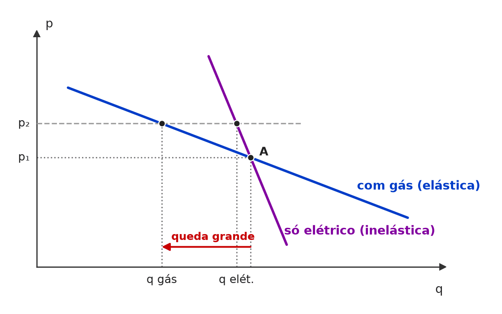 Pelo mesmo ponto inicial A passam as duas demandas por eletricidade. Com a mesma alta de tarifa (p₁ → p₂), a cidade que tem gás (curva mais plana) reduz muito mais o consumo do que a cidade só com aquecimento elétrico. 🧐 Dissecando a redação do item: [paráfrase fiel · modulador relativo] O item disfarça a regra “substitutos ↑ → elasticidade ↑” num cenário concreto e longo. O “deve apresentar” (tendência) deixa a comparação segura. Quem lê rápido pode achar que o inverno torna a eletricidade “essencial” nas duas cidades por igual — o que muda é a existência da alternativa. 😈 Para dificultar:
|
[C/E - Banca não identificada › 2010 › Determinantes e prazos]Julgue o item a seguir, relativo aos determinantes da demanda e da elasticidade-preço. Item: Campanhas publicitárias bem-sucedidas, além de deslocarem, para cima e para a direita, a curva de demanda de mercado do produto anunciado, contribuem, quando promovem a fidelização do cliente, para tornar essa curva mais preço-inelástica. | ✅ CERTO Campanhas publicitárias bem-sucedidas, além de deslocarem, para cima e para a direita, a curva de demanda de mercado do produto anunciado, contribuem, quando promovem a fidelização do cliente, para tornar essa curva mais preço-inelástica. 🎯 Em poucas palavras: Publicidade muda as preferências — um determinante da demanda que não é o preço —, então desloca a curva; e a fidelização reduz os substitutos percebidos, o que torna a demanda menos elástica. 📖 Destrinchando o tema:
📈 No gráfico: 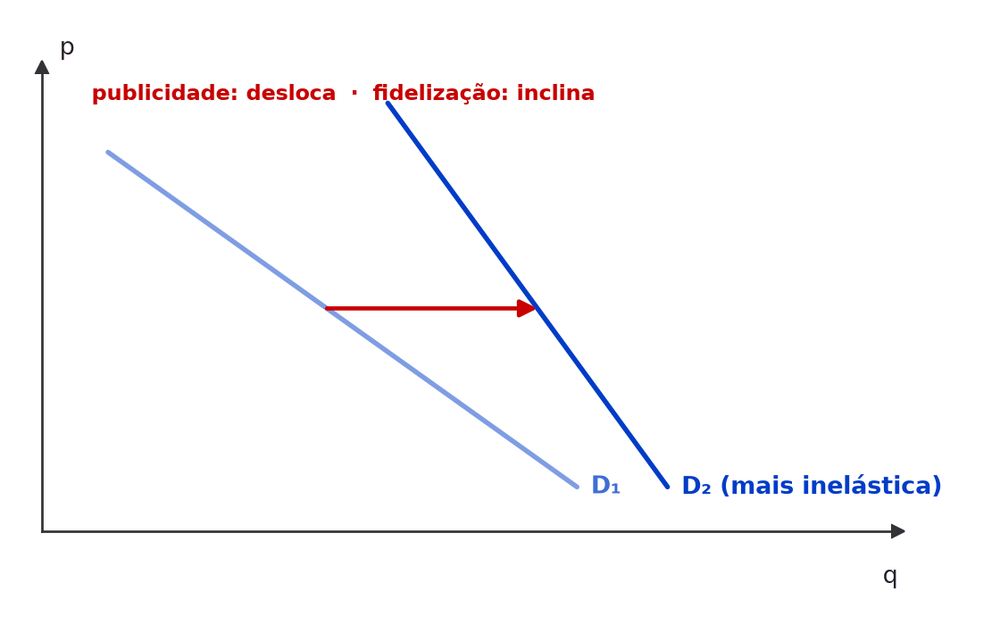 A publicidade bem-sucedida desloca a demanda para a direita (D₁ → D₂); a fidelização a deixa mais inclinada: ao mesmo preço, a quantidade reage menos a variações de preço (|ε| menor em D₂). 🧐 Dissecando a redação do item: [detalhe · modulador relativo] O item empilha duas afirmações verdadeiras e aposta que o candidato estranhe o “para cima e para a direita” (é o mesmo deslocamento visto pelos dois eixos) ou ache que elasticidade só depende do preço. O “contribuem” e o “mais” (comparativo) tornam a segunda parte segura. 😈 Para dificultar:
|
[C/E - Banca não identificada › Determinantes e prazos]Julgue o item a seguir, relativo aos determinantes da elasticidade-preço da demanda. Item: A demanda de um bem será mais inelástica se não houver substitutos no mercado. | ✅ CERTO A demanda de um bem será mais inelástica se não houver substitutos no mercado. 🎯 Em poucas palavras: Sem substitutos, o consumidor não tem para onde migrar quando o preço sobe: a quantidade demandada cai pouco — demanda mais inelástica. 📖 Destrinchando o tema:
🧐 Dissecando a redação do item: [paráfrase fiel] Regra direta, em forma comparativa (“mais inelástica”), o que a torna segura. A versão ERRADA do mesmo par troca “inelástica” por “elástica”: ECO-E1-0110-1. 😈 Para dificultar:
|
[C/E - Banca não identificada › Determinantes e prazos]Julgue o item a seguir, relativo aos determinantes da elasticidade-preço. Item: A elasticidade no longo prazo pode diferir daquela vigente no curto prazo. | ✅ CERTO A elasticidade no longo prazo pode diferir daquela vigente no curto prazo. 🎯 Em poucas palavras: O horizonte de tempo é determinante da elasticidade: com mais tempo, consumidores e produtores encontram substitutos e ajustam hábitos e equipamentos — em geral, a elasticidade cresce no longo prazo. 📖 Destrinchando o tema:
🧐 Dissecando a redação do item: [modulador relativo] O “pode” salva o item: não afirma em que sentido a elasticidade muda, só que muda. A banca transforma esse tema em ERRADO com absolutos (“é sempre maior no longo prazo”) ou trocando o sentido para bens duráveis. 😈 Para dificultar:
|
[C/E - Banca não identificada › Determinantes e prazos]Julgue o item a seguir, relativo aos determinantes da elasticidade-preço da demanda. Item: Com a existência de bens substitutos pode-se esperar maior elasticidade-preço da demanda de um bem. | ✅ CERTO Com a existência de bens substitutos pode-se esperar maior elasticidade-preço da demanda de um bem. 🎯 Em poucas palavras: Havendo substitutos, um aumento de preço leva o consumidor a trocar de bem: a quantidade demandada reage mais — elasticidade maior. 📖 Destrinchando o tema:
🧐 Dissecando a redação do item: [paráfrase fiel · modulador relativo] Regra de manual, protegida pelo “pode-se esperar”. Itens-irmãos do mesmo bloco: ECO-E1-0101-1, ECO-E1-0106-1 e ECO-E1-0110-1 (versão ERRADA). 😈 Para dificultar:
|
[C/E - Banca não identificada › Determinantes e prazos]Julgue o item a seguir, relativo aos determinantes da elasticidade-preço da demanda. Item: A respeito da demanda, podemos afirmar que a existência de bens substitutos pode exercer influência sobre a elasticidade de um bem. | ✅ CERTO A respeito da demanda, podemos afirmar que a existência de bens substitutos pode exercer influência sobre a elasticidade de um bem. 🎯 Em poucas palavras: Substitutos são o principal determinante da elasticidade-preço: quanto mais e melhores, mais elástica a demanda. O item afirma só que “pode influenciar” — verdadeiro com folga. 📖 Destrinchando o tema:
🧐 Dissecando a redação do item: [modulador relativo] Afirmação de alcance mínimo (“pode exercer influência”): não diz em que sentido nem quanto. Itens assim quase sempre são CERTO; o risco é o candidato desconfiar da obviedade. Itens-irmãos: ECO-E1-0101-1, ECO-E1-0104-1. 😈 Para dificultar:
|
[C/E - Banca não identificada › Determinantes e prazos]Julgue o item a seguir, relativo aos determinantes da elasticidade-preço da demanda. Item: Considerando a relação de elasticidade-preço da demanda de um produto, a demanda desse produto será mais elástica a longo prazo. | ✅ CERTO Considerando a relação de elasticidade-preço da demanda de um produto, a demanda desse produto será mais elástica a longo prazo. 🎯 Em poucas palavras: Com mais tempo, o consumidor encontra substitutos e muda hábitos e equipamentos: em regra, a demanda é mais elástica no longo prazo. ⚠️ Gabarito contestável: O “será” não admite exceção, e os bens duráveis são a exceção de manual: a demanda por carros e eletrodomésticos é mais elástica no curto prazo, porque o consumidor adia a reposição. O CERTO se sustenta como regra geral (bens não duráveis); numa prova que trouxesse duráveis, o item seria ERRADO. 📖 Destrinchando o tema:
📈 No gráfico: 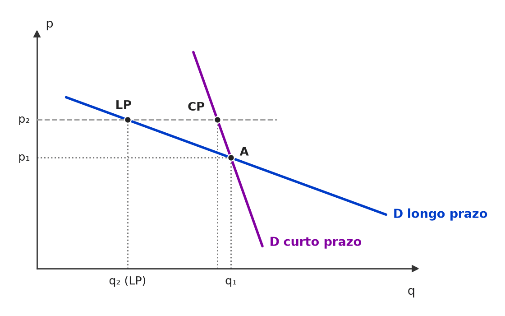 Pelo mesmo ponto inicial A passam a demanda de curto prazo (íngreme) e a de longo prazo (mais plana). A mesma alta de preço (p₁ → p₂) reduz pouco a quantidade no curto prazo e muito no longo prazo. 🧐 Dissecando a redação do item: [paráfrase fiel · detalhe] Regra geral apresentada sem modulador (“será”). O gabarito oficial a aceita; o detalhe que a tornaria ERRADA é a exceção dos duráveis. Compare com ECO-E1-0102-1, que usa “pode diferir” e não tem esse risco. 😈 Para dificultar:
|
[C/E - Banca não identificada › Determinantes e prazos]Julgue o item a seguir, relativo aos determinantes da elasticidade-preço da demanda. Item: A demanda de um produto será mais elástica se ele for extremamente essencial ao consumidor. | ❌ ERRADO A demanda de um produto será mais elástica se ele for extremamente essencial ao consumidor. 🎯 Em poucas palavras: Essencialidade reduz a sensibilidade ao preço: do que é imprescindível não se abre mão. A demanda é mais inelástica, não mais elástica. 📖 Destrinchando o tema:
🧐 Dissecando a redação do item: [inversão] Troca o sentido da relação essencialidade × elasticidade. O “extremamente” reforça a pista: quanto mais essencial, mais perto de elasticidade zero. Versão CERTO do mesmo tema: ECO-E1-0088-1. 😈 Para dificultar:
✍️ Reescrita correta: A demanda de um produto será menos elástica (mais inelástica) se ele for extremamente essencial ao consumidor. |
[C/E - Banca não identificada › Determinantes e prazos]Julgue o item a seguir, relativo aos determinantes da elasticidade-preço da demanda. Item: A demanda de um produto será mais elástica se não houver produtos substitutos no mercado. | ❌ ERRADO A demanda de um produto será mais elástica se não houver produtos substitutos no mercado. 🎯 Em poucas palavras: Sem substitutos, o consumidor não tem alternativa quando o preço sobe e reduz pouco o consumo: a demanda fica mais inelástica. 📖 Destrinchando o tema:
🧐 Dissecando a redação do item: [inversão] Inverte o sentido da regra. É a versão ERRADA de um par: ECO-E1-0101-1 traz a mesma frase com “mais inelástica” (CERTO). Em pares assim, decore a regra, não a frase. 😈 Para dificultar:
✍️ Reescrita correta: A demanda de um produto será mais inelástica se não houver produtos substitutos no mercado. |